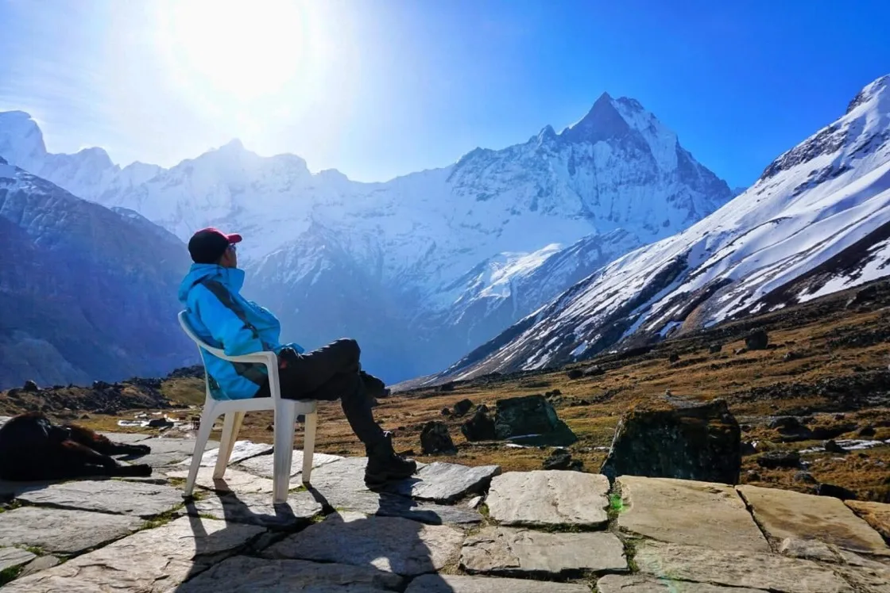
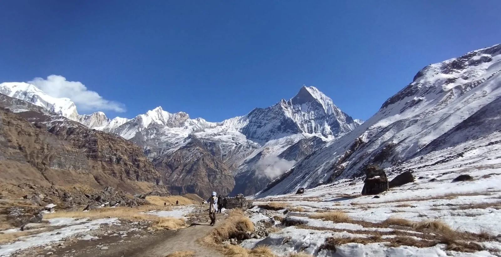
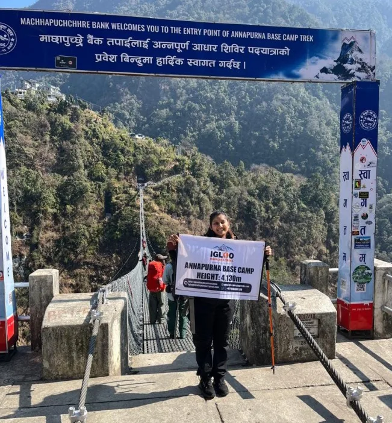
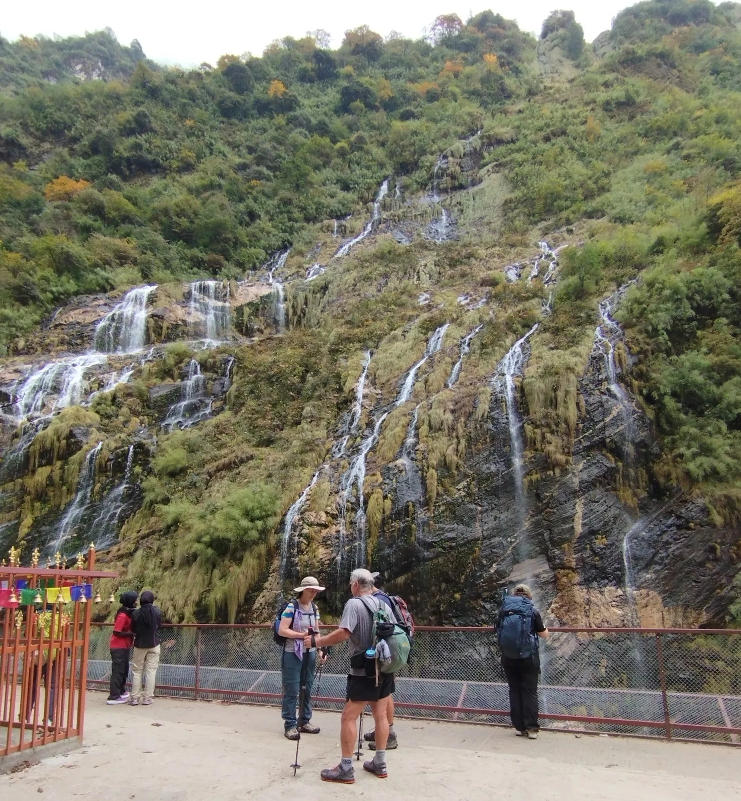

1. The 7-Day Express Route Philosophy: Fast-Paced Himalayan Immersion
The traditional Annapurna Base Camp trek historically required 10 to 14 days because hikers had to walk on foot from low-elevation road terminals like Nayapul or Phedi, often adding loops through Ghorepani and Poon Hill. While that extended loop offers lovely rural scenery, it consumes substantial holiday time on dusty dirt roads and repetitive low-altitude valley steps.
The 7-Day Express Itinerary strips away the non-essential detours, leveraging private 4WD transportation directly between Pokhara and the high roadhead at Siwai / Matque (1,400 m). By starting your trek at 1,400 meters, you bypass nearly 30 kilometers of road walking and step directly onto the pristine footpaths leading up to Chhomrong and the Modi Khola gorge.

The Trade-offs of the 7-Day Schedule:
- Higher Daily Hiking Output: You will walk between 5.5 and 7.5 hours per day, covering an average of 10 to 14 kilometers of steep stone staircases daily.
- Faster Vertical Ascent: You climb from 1,400 meters at the Siwai trailhead to 4,130 meters at ABC in just four days. You must maintain disciplined hydration (4 liters daily) and a measured walking cadence.
- Zero Wasted Travel Days: Perfect for international travelers taking a single 9-day vacation block (combining one week of leave with two weekends).
2. Day-by-Day 7-Day Itinerary: Pokhara to Annapurna Base Camp & Return
Below is the day-by-day operational schedule for the 7-day express Annapurna Base Camp trek:
| Day | Route Segment | Distance | Hiking Hours | Altitude (Start → End) |
|---|---|---|---|---|
| Day 01 | Drive Pokhara to Siwai (2.5 hrs); Trek to Chhomrong | 9.5 km | 4.5 – 5.5 hrs | 820 m → 1,400 m → 2,170 m |
| Day 02 | Chhomrong to Dovan via Sinuwa & Bamboo | 10.8 km | 5.5 – 6.5 hrs | 2,170 m → 1,900 m → 2,600 m |
| Day 03 | Dovan to Deurali via Himalayan Hotel | 7.8 km | 4.5 – 5.0 hrs | 2,600 m → 3,200 m |
| Day 04 | Deurali to Annapurna Base Camp (ABC) via MBC | 8.5 km | 5.0 – 6.0 hrs | 3,200 m → 3,700 m → 4,130 m |
| Day 05 | Sunrise at ABC (4,130 m); Trek descend to Bamboo | 15.2 km | 6.0 – 7.0 hrs | 4,130 m → 2,310 m |
| Day 06 | Bamboo to Jhinu Danda (Hot Springs recovery) | 9.2 km | 4.5 – 5.5 hrs | 2,310 m → 1,780 m |
| Day 07 | Jhinu Danda to Siwai; Drive private 4WD to Pokhara | 4.5 km | 2.0 – 2.5 hrs | 1,780 m → 1,400 m → 820 m |
| Total 7-Day Express Route: | 65.5 km | 32 – 38 hrs | Net Gain: +2,730 m | |

3. Hourly Trail Schedule, Daily Kilometers & Vertical Ascent Milestones
Because every hour counts on a 7-day fast-pack schedule, establishing disciplined morning routines is crucial to avoid hiking in the cold dusk or encountering afternoon cloud buildup:
- 6:30 AM Wake-Up & Breakfast: Pack your duffel bag before breakfast. Order a calorie-dense breakfast (porridge, Tibetan bread with eggs, or muesli with hot milk).
- 7:30 AM Boots on Trail: Start walking while the morning air is crisp and cool. The morning hours offer the best unobstructed mountain vistas.
- 12:00 PM – 1:00 PM Hot Lunch: Stop at designated teahouse villages (Sinuwa, Bamboo, Himalayan, or MBC) for a balanced lunch. Give your legs a 45-minute recovery rest.
- 3:30 PM – 4:30 PM Lodge Arrival: Check in, change out of sweaty hiking garments into dry evening thermal layers, and rehydrate with pots of hot ginger honey lemon tea.
Notice that our 7-day schedule stages your sleeping nights with manageable altitude jumps: Night 1 at Chhomrong (2,170 m), Night 2 at Dovan (2,600 m), Night 3 at Deurali (3,200 m), and Night 4 at ABC (4,130 m). The critical jump from Deurali to ABC (+930 m) is mitigated because you rest at MBC (3,700 m) for lunch before completing the final gentle moraine walk.
4. Route Comparison: 7-Day Express vs 9-Day Standard vs 13-Day Classic Circuit
Choosing the right itinerary duration depends entirely on your fitness, holiday availability, and appetite for steep staircases:
| Itinerary Variant | Total Duration | Distance | Poon Hill Loop Included? | Physical Intensity | Best For |
|---|---|---|---|---|---|
| 7-Day Express | 7 Days (Pokhara to Pokhara) | 65.5 km | No (Direct route) | High (Strenuous) | Fit hikers with limited vacation time |
| 9-Day Standard | 9 Days (Incl. Pokhara rests) | 72 km | Optional side-loop | Moderate to Strenuous | Balanced pace with buffer contingency |
| 13-Day Classic | 13 Days (Kathmandu to Kathmandu) | 115 km | Yes (Ulleri, Ghorepani, Poon Hill) | Moderate | First-timers wanting full cultural loop |

5. Maximizing Trailhead Efficiency: Pokhara to Siwai / Matque Private 4WD Logistics
The secret to executing the 7-day trek successfully lies in Day 1 logistics. Do not take the public bus from Pokhara, as it stops dozens of times along the Prithvi Highway, turns around at Nayapul, and wastes up to 5 hours.
Private 4WD Scorpio Transfer: Arrange for a private 4WD Mahindra Scorpio to pick you up at your Lakeside Pokhara hotel at 6:30 AM sharp. The drive travels through Lumle, Nayapul, and Birethanti, continuing up the rough dirt road alongside the Modi Khola to reach Siwai (or Matque if road conditions allow) by 9:30 AM.
Starting to hike from Siwai by 9:45 AM ensures you can climb through Kyumi and Jhinu Danda up to Chhomrong before 3:30 PM, giving you adequate rest before Day 2’s notorious stair climb.
6. Mid-Trail Endurance: Conquering the Sinuwa Ridge and Upper Modi Canyon in 48 Hours
Days 2 and 3 represent the physical core of the 7-day trek. On Day 2, you tackle the legendary Chhomrong stairs: descending 2,140 granite steps to the suspension bridge at 1,900 m, then immediately climbing 1,800 steps straight up the opposite cliff to Upper Sinuwa (2,340 m).
From Sinuwa, the trail plunges into dense bamboo, oak, and rhododendron cloud forests. Passing through Bamboo (2,310 m), you arrive in Dovan (2,600 m) for the night. The following morning (Day 3), you climb past Himalayan Hotel and Hinku Cave, ascending through the sub-alpine gorge to Deurali (3,200 m). By sleeping at Deurali, you stage yourself perfectly for the final push into the sanctuary.

7. The Climactic Ascent: Pushing Through Deurali and MBC to Reach ABC by Sunset
Day 4 is the crowning achievement of the express itinerary. Leaving Deurali at 7:30 AM, you follow the narrow river gorge, passing active avalanche paths with caution. As you emerge from the canyon, the sheer walls suddenly peel back, revealing the vast, sun-drenched basin of Machapuchare Base Camp (MBC, 3,700 m).
After a hot lunch and ginger tea at MBC, you make the final 2-hour gentle ascent across glacial moraine fields. As you walk westward into the afternoon sun, the massive 4,000-meter vertical wall of Annapurna I draws closer until you reach the welcoming lodges of Annapurna Base Camp (4,130 m) by 3:00 PM—leaving plenty of daylight to watch the sunset paint the peaks in gold and violet.
8. Sanctuary Magic: Dawn Alpenglow on Annapurna I & Hiunchuli Amphitheater
The dawn of Day 5 will be etched into your memory for the rest of your life. Stepping out onto the frosted moraine at 5:15 AM into crisp sub-zero air (-5°C to -10°C), you are surrounded by an unbroken 360-degree arena of Himalayan titans:
- Annapurna I (8,091 m): Igniting in fiery golden light across its legendary, lethal south face.
- Annapurna South (7,219 m) & Hiunchuli (6,441 m): Flanking the western and southwestern perimeter with hanging seracs.
- Machapuchare (6,993 m): Glowing pink and silver from the eastern skyline, its unclimbed summit pristine against the dawn sky.
- Tent Peak (5,663 m) & Glacier Dome (7,193 m): Completing the glaciated ring.
9. The Rapid Downhill: Dropping 2,350 Vertical Meters from ABC to Jhinu Danda in Two Days
Descending 2,350 vertical meters in just two days requires disciplined joint management. After breakfast on Day 5, you retrace your steps down from ABC (4,130 m) all the way to Bamboo (2,310 m)—a 15.2-kilometer descent that takes approximately 6.5 hours.
On Day 6, you climb back over the Sinuwa ridge, descend the Chhomrong river valley, climb up through Chhomrong village, and descend the southeastern spur to the hillside settlement of Jhinu Danda (1,780 m). By 3:30 PM, you can walk down to the riverbank and immerse yourself in the natural thermal hot spring pools to flush out lactic acid.
10. Rapid Ascent Physiology: Managing Hypoxia, Hydration & Diamox on a 7-Day Schedule
Because you ascend from 1,400 meters to 4,130 meters in four days, altitude sickness (AMS) must be actively managed. Follow our medical safety protocol:
| Symptom Severity | Lake Louise Score | Typical Symptoms | Mandatory Action on 7-Day Trek |
|---|---|---|---|
| Mild AMS | 1 – 3 points | Mild headache, slight fatigue, low appetite | Rest, drink 1L electrolyte water, take 500mg Paracetamol. |
| Moderate AMS | 4 – 6 points | Throbbing headache, nausea, dizziness, insomnia | Do not ascend further. Stop at MBC; consider starting Diamox (125mg). |
| Severe AMS / HAPE | 7+ points | Vomiting, loss of coordination (ataxia), rattling cough | Immediate descent of 500+ meters; coordinate helicopter rescue. |
Drink a minimum of 3.5 to 4.5 liters of treated water daily. Fast uphill trekking causes heavy perspiration in lower humid forests and rapid moisture loss from your lungs in dry upper air. Dehydration mimics and accelerates altitude sickness.
11. Teahouse Management on a Fast Schedule: Securing Rooms at Deurali & ABC
Because the upper Modi Khola gorge has strict environmental limits on lodge construction, only 4 lodges exist at Deurali and 5 lodges at ABC. During peak trekking months (October, November, April, May), beds fill completely by 2:00 PM.
Trekking with a registered Sherpa guide from Igloo Himalaya Treks ensures your beds at Deurali, MBC, and ABC are reserved ahead by phone. Independent trekkers arriving without reservations on a fast itinerary often find themselves sleeping on dining room benches or squeezed into communal dining halls.
12. Fast & Light Packing Strategy: 7 kg Base Weight for Steep Stone Staircases
On a fast 7-day itinerary, pack weight is your biggest performance enemy. Carrying a heavy 15-kilogram backpack up the 2,140 Chhomrong steps will destroy your knees and exhaust your aerobic capacity.

The 7-Day Ultra-Light Gear System:
- Hire a Porter: Send your 10–12 kg duffel bag with a porter. Walk with a 25–30L daypack containing only water, rain gear, warm layer, camera, and trail snacks (5–6 kg total).
- No Excess Clothing: Take only 2 technical hiking shirts, 1 pair of hiking pants, 3 pairs of Merino wool socks, and 1 set of thermal sleepwear. You can wash light items in Chhomrong or wait until Pokhara.
- Compact Down Jacket & Sleeping Bag: Pack a compressible 800-fill down jacket and an ultralight -5°C to -10°C down sleeping bag.
- Dual Carbon Trekking Poles: Non-negotiable for saving your knees on the thousands of stone descents.
13. 2027 Cost Breakdown: Express Guide & Porter Wages, Jeeps & Teahouse Expenses
The 7-day express trek offers exceptional financial value because it eliminates mountain flights and minimizes days on trail:
| Expense Item | Cost (USD approx.) | Cost (NPR) | Notes |
|---|---|---|---|
| ACAP Conservation Area Permit | ~$23 USD | NPR 3,000 | Mandatory national park fee |
| TIMS Trekkers Card | ~$15 USD | NPR 2,000 | Mandatory via registered agency |
| Licensed Trekking Guide (7 Days) | $210 – $260 USD | $30 – $38 / day | Includes guide wages, meals, lodging, insurance |
| Dedicated Porter (7 Days) | $150 – $180 USD | $21 – $26 / day | Carries up to 20 kg (shared by 2 hikers) |
| Private 4WD Jeep (Pokhara ↔ Siwai round-trip) | $120 – $150 USD total | NPR 16,000 – 20,000 | Split between passengers (~$35/person) |
| Teahouse Food & Lodging (6 Nights) | $160 – $220 USD | $26 – $36 / day | 3 hot meals daily, tea, and twin/dorm room |
| Hot Springs Entry & Incidentals | $20 – $35 USD | NPR 2,500 – 4,500 | Hot showers, Wi-Fi, hot spring fee (NPR 150) |
| Total All-Inclusive Guided Cost: | $650 – $950 USD per person (Based on 2 persons) | ||
14. Frequently Asked Questions: 7-Day Annapurna Base Camp Trek
Get immediate answers to the most common questions regarding planning, fitness, and pacing for the 7-day Annapurna Base Camp express trek.

Ready to Experience the Himalayas?
Whether you are preparing for high-altitude trekking, cultural circuits, or alpine summit expeditions, start planning a bespoke journey tailored to your fitness, travel season, and style.